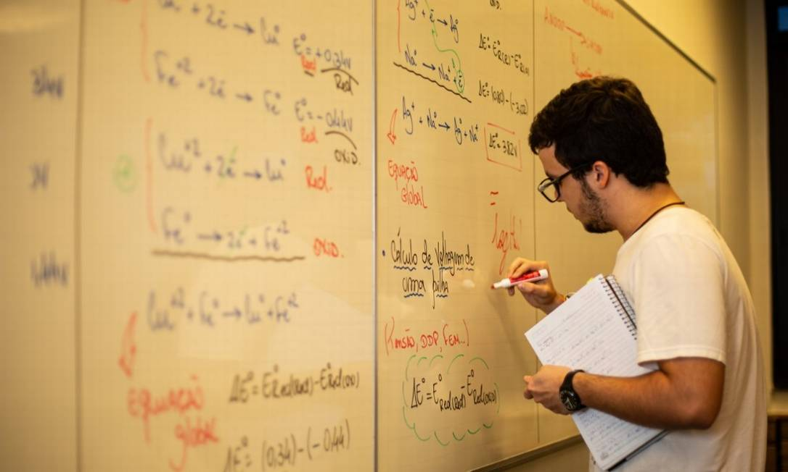
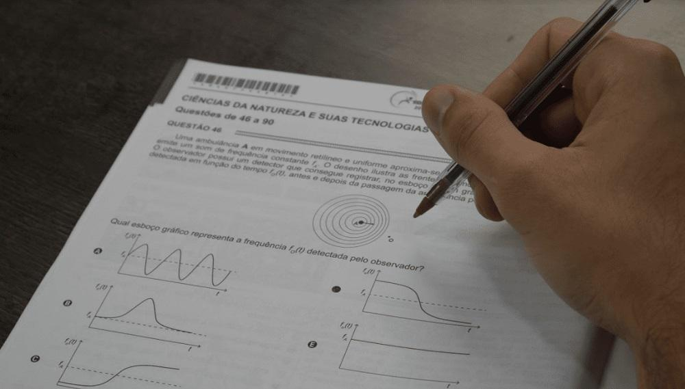

Quais conteúdos eu devo estudar para o vestibular?
História Geral

- Pré-História: Formação do homem e das primeiras civilizações.
- Antiguidade: Civilizações Mesopotâmicas, Egito Antigo, Grécia Antiga e Roma Antiga.
- Idade Média: Feudalismo, Cruzadas, Islamismo e Império Bizantino.
- Idade Moderna: Renascimento, Reforma Protestante, Colonialismo e Revolução Industrial.
- Idade Contemporânea: Revolução Francesa, Guerra Fria, Descolonização e Globalização.
História do Brasil

- Brasil Colonial: Descobrimento, capitanias hereditárias e economia açucareira.
- Brasil Império: Independência, Primeiro e Segundo Reinado.
- República: Proclamação da República, Era Vargas e Ditadura Militar.
História das Relações Internacionais

- Conferências e Tratados: Tratado de Versalhes, Conferência de Potsdam.
- Guerra Fria: Divisão do mundo, guerras por procuração, corrida armamentista.
- Descolonização: Processos de independência na África e na Ásia.
- Globalização: Fenômeno econômico, cultural e político no século XXI.
- Conflitos Contemporâneos: Luta contra o terrorismo, conflitos no Oriente Médio.